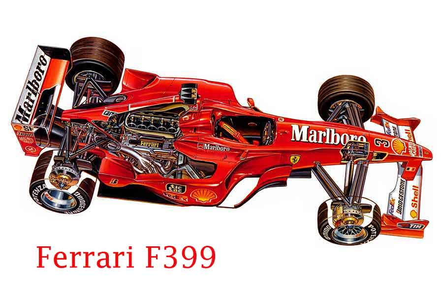
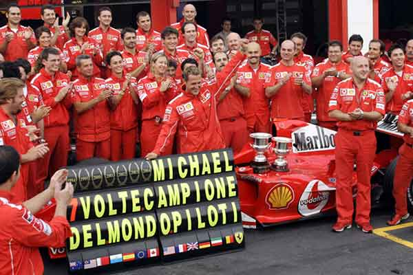
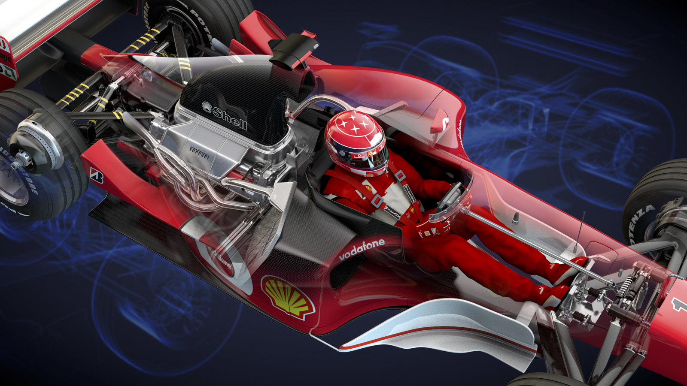
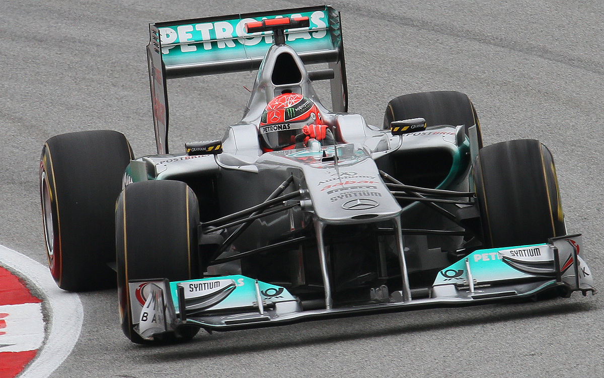
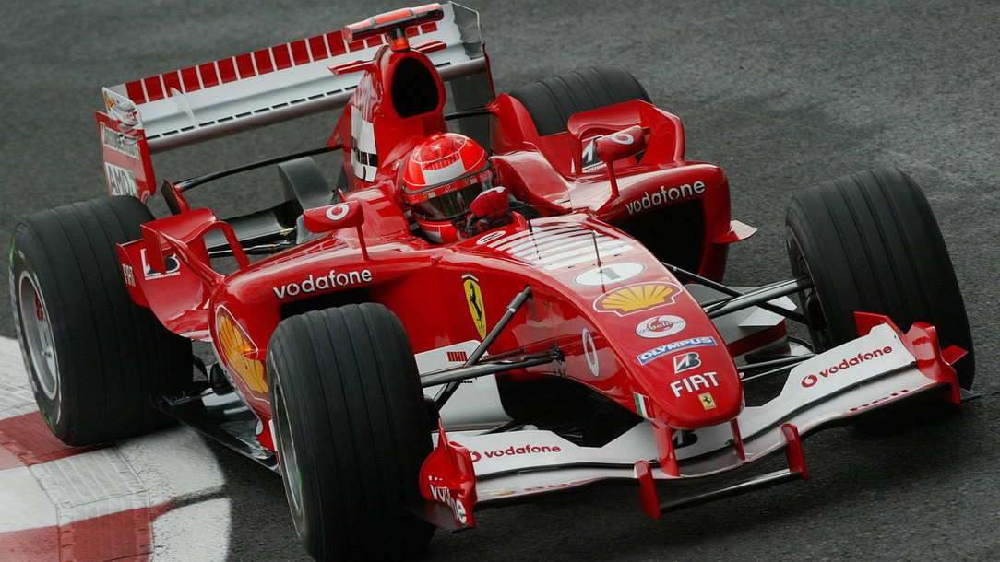
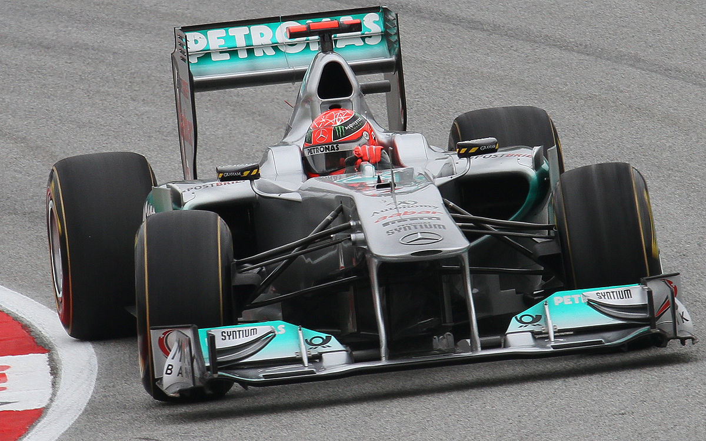
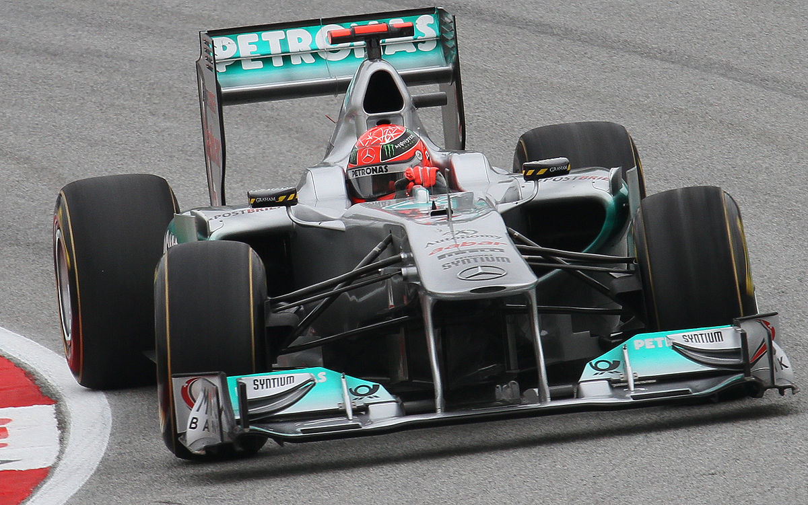

Michael Shumacher during his karting yearsThe ferrari F310/F310B (left) and the ferrari F399 (Right) cars with which the Ferrari team competed in the 1996 and 1997 seasons for the. It was driven in both years by Michael Schumacher and Eddie IrvineThe Ferrari F300 was a Formula One car that the Ferrari team competed with for the 1998 Formula One World

The Ferrari F399 was the car that the Ferrari team competed with for the 1999 Formula One World Championship.

Michael Schumacher celebrates the 2004 title with his team

Ferrari F2002 by Simon Roulstone (I like this one)
Video - Michael Schumacher trying to denfend his place against Lewis Hamilton at Monza (2012)

Michael Schumacher during his final years in formula one driving for Mercedes with Nico Rosbergas teammate(2010-2012)

The ferrari F2005 for the 2005 season, the F2005 was not nearly as successful a car as its predecessors, notching only a single victory.
 
